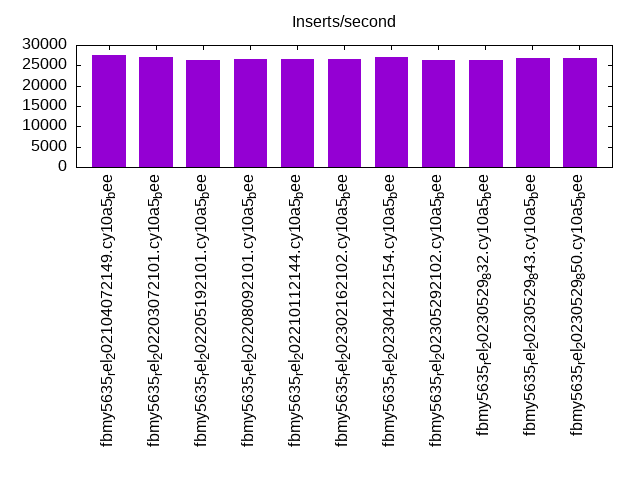

Introduction
This is a report for the insert benchmark with 20M docs and 1 client(s). It is generated by scripts (bash, awk, sed) and Tufte might not be impressed. An overview of the insert benchmark is here and a short update is here. Below, by DBMS, I mean DBMS+version.config. An example is my8020.c10b40 where my means MySQL, 8020 is version 8.0.20 and c10b40 is the name for the configuration file.
The test server has 8 AMD cores, 16G RAM and an NVMe SSD. It is described here as the Beelink. The benchmark was run with 1 client and there were 1 or 3 connections per client (1 for queries or inserts without rate limits, 1+1 for rate limited inserts+deletes). It uses 1 table. It loads 20M rows per table without secondary indexes, creates secondary indexes, then inserts 100M rows per table with a delete per insert to avoid growing the table. It then does 3 read+write tests for 3600s each that do queries as fast as possible with 100, 500 and then 1000 inserts/second/client concurrent with the queries and 1000 deletes/second to avoid growing the table. The database is cached by the storage engine. Clients and the DBMS share one server. The per-database configs are in the per-database subdirectories here.
The tested DBMS are:
- fbmy5635_rel_202104072149.cy10a5_bee - MyRocks 5.6.35 from 20210407 at git hash (f896415fa0 MySQL, 0f8c041ea RocksDB), RocksDB 6.19, cy10a5_bee config that adds rocksdb_max_subcompactions=2
- fbmy5635_rel_202203072101.cy10a5_bee - MyRocks 5.6.35 from 20220307 at git hash (e7d976ee MySQL, df4d3cf6fd RocksDB), RocksDB 6.28.2, cy10a5_bee config that adds rocksdb_max_subcompactions=2
- fbmy5635_rel_202205192101.cy10a5_bee - MyRocks 5.6.35 from 20220519 at git hash (d503bd77 MySQL, f2f26b15 RocksDB), RocksDB 7.2.2, cy10a5_bee config that adds rocksdb_max_subcompactions=2
- fbmy5635_rel_202208092101.cy10a5_bee - MyRocks 5.6.35 from 20220809 at git hash (877a0e585 MySQL, 8e0f4952 RocksDB), RocksDB 7.3.1, cy10a5_bee config that adds rocksdb_max_subcompactions=2
- fbmy5635_rel_202210112144.cy10a5_bee - MyRocks 5.6.35 from 20221011 at git hash (c691c7160 MySQL, 8e0f4952 RocksDB), RocksDB 7.3.1, cy10a5_bee config that adds rocksdb_max_subcompactions=2
- fbmy5635_rel_202302162102.cy10a5_bee - MyRocks 5.6.35 from 20230216 at git hash (21a2b0aa MySQL, e5dcebf7 RocksDB), RocksDB 7.10.0, cy10a5_bee config that adds rocksdb_max_subcompactions=2
- fbmy5635_rel_202304122154.cy10a5_bee - MyRocks 5.6.35 from 20230412 at git hash (205c31dd MySQL, 3258b5c3 RocksDB), RocksDB 7.10.2, cy10a5_bee config that adds rocksdb_max_subcompactions=2
- fbmy5635_rel_202305292102.cy10a5_bee - MyRocks 5.6.35 from 20230529 at git hash (b739eac1 MySQL, 03057204 RocksDB), RocksDB 8.2.1, cy10a5_bee config that adds rocksdb_max_subcompactions=2
- fbmy5635_rel_20230529_832.cy10a5_bee - MyRocks 5.6.35 from 20230529 at git hash (b739eac1 MySQL), but with RocksDB 8.3.2, cy10a5_bee config that adds rocksdb_max_subcompactions=2
- fbmy5635_rel_20230529_843.cy10a5_bee - MyRocks 5.6.35 from 20230529 at git hash (b739eac1 MySQL), but with RocksDB 8.3.2, cy10a5_bee config that adds rocksdb_max_subcompactions=2
- fbmy5635_rel_20230529_850.cy10a5_bee - MyRocks 5.6.35 from 20230529 at git hash (b739eac1 MySQL), but with RocksDB 8.3.2, cy10a5_bee config that adds rocksdb_max_subcompactions=2
Contents
- Summary
- l.i0: load without secondary indexes
- l.x: create secondary indexes
- l.i1: continue load after secondary indexes created
- q100.1: range queries with 100 insert/s per client
- q500.1: range queries with 500 insert/s per client
- q1000.1: range queries with 1000 insert/s per client
Summary
The numbers are inserts/s for l.i0 and l.i1, indexed docs (or rows) /s for l.x and queries/s for q*.2. The values are the average rate over the entire test for inserts (IPS) and queries (QPS). The range of values for IPS and QPS is split into 3 parts: bottom 25%, middle 50%, top 25%. Values in the bottom 25% have a red background, values in the top 25% have a green background and values in the middle have no color. A gray background is used for values that can be ignored because the DBMS did not sustain the target insert rate. Red backgrounds are not used when the minimum value is within 80% of the max value.
| dbms | l.i0 | l.x | l.i1 | q100.1 | q500.1 | q1000.1 |
|---|---|---|---|---|---|---|
| fbmy5635_rel_202104072149.cy10a5_bee | 80972 | 83058 | 27533 | 2707 | 2723 | 2688 |
| fbmy5635_rel_202203072101.cy10a5_bee | 79365 | 83402 | 26961 | 2709 | 2678 | 2644 |
| fbmy5635_rel_202205192101.cy10a5_bee | 76628 | 82716 | 26274 | 2643 | 2623 | 2624 |
| fbmy5635_rel_202208092101.cy10a5_bee | 78125 | 82041 | 26518 | 2680 | 2646 | 2649 |
| fbmy5635_rel_202210112144.cy10a5_bee | 77821 | 83058 | 26497 | 2650 | 2609 | 2590 |
| fbmy5635_rel_202302162102.cy10a5_bee | 77821 | 82041 | 26652 | 2642 | 2640 | 2606 |
| fbmy5635_rel_202304122154.cy10a5_bee | 77519 | 82041 | 26940 | 2663 | 2615 | 2606 |
| fbmy5635_rel_202305292102.cy10a5_bee | 76628 | 82716 | 26371 | 2626 | 2617 | 2620 |
| fbmy5635_rel_20230529_832.cy10a5_bee | 76628 | 81707 | 26371 | 2701 | 2582 | 2598 |
| fbmy5635_rel_20230529_843.cy10a5_bee | 77821 | 81707 | 26846 | 2654 | 2555 | 2584 |
| fbmy5635_rel_20230529_850.cy10a5_bee | 75758 | 82041 | 26738 | 2585 | 2561 | 2566 |
This table has relative throughput, throughput for the DBMS relative to the DBMS in the first line, using the absolute throughput from the previous table. Values less than 0.95 have a yellow background. Values greater than 1.05 have a blue background.
| dbms | l.i0 | l.x | l.i1 | q100.1 | q500.1 | q1000.1 |
|---|---|---|---|---|---|---|
| fbmy5635_rel_202104072149.cy10a5_bee | 1.00 | 1.00 | 1.00 | 1.00 | 1.00 | 1.00 |
| fbmy5635_rel_202203072101.cy10a5_bee | 0.98 | 1.00 | 0.98 | 1.00 | 0.98 | 0.98 |
| fbmy5635_rel_202205192101.cy10a5_bee | 0.95 | 1.00 | 0.95 | 0.98 | 0.96 | 0.98 |
| fbmy5635_rel_202208092101.cy10a5_bee | 0.96 | 0.99 | 0.96 | 0.99 | 0.97 | 0.99 |
| fbmy5635_rel_202210112144.cy10a5_bee | 0.96 | 1.00 | 0.96 | 0.98 | 0.96 | 0.96 |
| fbmy5635_rel_202302162102.cy10a5_bee | 0.96 | 0.99 | 0.97 | 0.98 | 0.97 | 0.97 |
| fbmy5635_rel_202304122154.cy10a5_bee | 0.96 | 0.99 | 0.98 | 0.98 | 0.96 | 0.97 |
| fbmy5635_rel_202305292102.cy10a5_bee | 0.95 | 1.00 | 0.96 | 0.97 | 0.96 | 0.97 |
| fbmy5635_rel_20230529_832.cy10a5_bee | 0.95 | 0.98 | 0.96 | 1.00 | 0.95 | 0.97 |
| fbmy5635_rel_20230529_843.cy10a5_bee | 0.96 | 0.98 | 0.98 | 0.98 | 0.94 | 0.96 |
| fbmy5635_rel_20230529_850.cy10a5_bee | 0.94 | 0.99 | 0.97 | 0.95 | 0.94 | 0.95 |
This lists the average rate of inserts/s for the tests that do inserts concurrent with queries. For such tests the query rate is listed in the table above. The read+write tests are setup so that the insert rate should match the target rate every second. Cells that are not at least 95% of the target have a red background to indicate a failure to satisfy the target.
| dbms | q100.1 | q500.1 | q1000.1 |
|---|---|---|---|
| fbmy5635_rel_202104072149.cy10a5_bee | 100 | 499 | 998 |
| fbmy5635_rel_202203072101.cy10a5_bee | 100 | 499 | 998 |
| fbmy5635_rel_202205192101.cy10a5_bee | 100 | 499 | 998 |
| fbmy5635_rel_202208092101.cy10a5_bee | 100 | 499 | 998 |
| fbmy5635_rel_202210112144.cy10a5_bee | 100 | 499 | 998 |
| fbmy5635_rel_202302162102.cy10a5_bee | 100 | 499 | 998 |
| fbmy5635_rel_202304122154.cy10a5_bee | 100 | 499 | 998 |
| fbmy5635_rel_202305292102.cy10a5_bee | 100 | 499 | 998 |
| fbmy5635_rel_20230529_832.cy10a5_bee | 100 | 499 | 998 |
| fbmy5635_rel_20230529_843.cy10a5_bee | 100 | 499 | 998 |
| fbmy5635_rel_20230529_850.cy10a5_bee | 100 | 499 | 998 |
| target | 100 | 500 | 1000 |
l.i0
l.i0: load without secondary indexes. Graphs for performance per 1-second interval are here.
Average throughput:

Insert response time histogram: each cell has the percentage of responses that take <= the time in the header and max is the max response time in seconds. For the max column values in the top 25% of the range have a red background and in the bottom 25% of the range have a green background. The red background is not used when the min value is within 80% of the max value.
| dbms | 256us | 1ms | 4ms | 16ms | 64ms | 256ms | 1s | 4s | 16s | gt | max |
|---|---|---|---|---|---|---|---|---|---|---|---|
| fbmy5635_rel_202104072149.cy10a5_bee | 0.001 | 99.873 | 0.121 | 0.004 | 0.001 | 0.097 | |||||
| fbmy5635_rel_202203072101.cy10a5_bee | 99.871 | 0.124 | 0.002 | 0.002 | 0.096 | ||||||
| fbmy5635_rel_202205192101.cy10a5_bee | 99.867 | 0.129 | 0.004 | 0.001 | 0.075 | ||||||
| fbmy5635_rel_202208092101.cy10a5_bee | 99.870 | 0.127 | 0.003 | 0.001 | 0.074 | ||||||
| fbmy5635_rel_202210112144.cy10a5_bee | 99.868 | 0.129 | 0.003 | 0.001 | 0.070 | ||||||
| fbmy5635_rel_202302162102.cy10a5_bee | 99.867 | 0.128 | 0.005 | 0.056 | |||||||
| fbmy5635_rel_202304122154.cy10a5_bee | 99.867 | 0.129 | 0.004 | 0.055 | |||||||
| fbmy5635_rel_202305292102.cy10a5_bee | 99.866 | 0.131 | 0.003 | 0.001 | 0.067 | ||||||
| fbmy5635_rel_20230529_832.cy10a5_bee | 99.865 | 0.131 | 0.004 | 0.001 | 0.069 | ||||||
| fbmy5635_rel_20230529_843.cy10a5_bee | 99.867 | 0.129 | 0.003 | 0.001 | 0.070 | ||||||
| fbmy5635_rel_20230529_850.cy10a5_bee | 99.864 | 0.132 | 0.005 | 0.062 |
Performance metrics for the DBMS listed above. Some are normalized by throughput, others are not. Legend for results is here.
ips qps rps rmbps wps wmbps rpq rkbpq wpi wkbpi csps cpups cspq cpupq dbgb1 dbgb2 rss maxop p50 p99 tag 80972 0 0 0.0 37.0 13.8 0.000 0.000 0.000 0.174 7921 23.2 0.098 23 0.7 1.8 0.2 0.097 81606 73519 20m.fbmy5635_rel_202104072149.cy10a5_bee 79365 0 0 0.0 36.3 13.5 0.000 0.000 0.000 0.174 7843 23.0 0.099 23 0.7 1.8 0.2 0.096 80411 72318 20m.fbmy5635_rel_202203072101.cy10a5_bee 76628 0 0 0.0 35.0 13.0 0.000 0.000 0.000 0.174 7562 22.4 0.099 23 0.7 1.8 0.2 0.075 77611 70522 20m.fbmy5635_rel_202205192101.cy10a5_bee 78125 0 0 0.0 37.5 13.3 0.000 0.000 0.000 0.174 7688 22.9 0.098 23 0.7 1.8 0.2 0.074 78912 72616 20m.fbmy5635_rel_202208092101.cy10a5_bee 77821 0 0 0.0 37.0 13.1 0.000 0.000 0.000 0.172 7622 22.8 0.098 23 0.7 1.8 0.2 0.070 78309 71818 20m.fbmy5635_rel_202210112144.cy10a5_bee 77821 0 0 0.0 34.9 13.1 0.000 0.000 0.000 0.172 7626 22.7 0.098 23 0.7 1.8 0.2 0.056 78412 72316 20m.fbmy5635_rel_202302162102.cy10a5_bee 77519 0 0 0.0 35.0 13.1 0.000 0.000 0.000 0.173 8431 22.9 0.109 24 0.7 1.8 0.2 0.055 78413 72618 20m.fbmy5635_rel_202304122154.cy10a5_bee 76628 0 0 0.0 34.7 12.9 0.000 0.000 0.000 0.173 7505 22.0 0.098 23 0.7 1.8 0.2 0.067 77112 69324 20m.fbmy5635_rel_202305292102.cy10a5_bee 76628 0 0 0.0 34.8 13.0 0.000 0.000 0.000 0.174 7537 22.4 0.098 23 0.7 1.8 0.2 0.069 77211 70321 20m.fbmy5635_rel_20230529_832.cy10a5_bee 77821 0 0 0.0 35.3 13.1 0.000 0.000 0.000 0.172 7620 23.0 0.098 24 0.7 1.8 0.2 0.070 78310 71020 20m.fbmy5635_rel_20230529_843.cy10a5_bee 75758 0 0 0.0 34.7 12.8 0.000 0.000 0.000 0.173 7455 21.7 0.098 23 0.7 1.8 0.2 0.062 76313 68822 20m.fbmy5635_rel_20230529_850.cy10a5_bee
l.x
l.x: create secondary indexes.
Average throughput:
Performance metrics for the DBMS listed above. Some are normalized by throughput, others are not. Legend for results is here.
ips qps rps rmbps wps wmbps rpq rkbpq wpi wkbpi csps cpups cspq cpupq dbgb1 dbgb2 rss maxop p50 p99 tag 83058 0 0 0.0 31.8 12.7 0.000 0.000 0.000 0.156 280 11.8 0.003 11 1.4 2.5 1.5 0.008 NA NA 20m.fbmy5635_rel_202104072149.cy10a5_bee 83402 0 0 0.0 32.4 12.7 0.000 0.000 0.000 0.156 249 11.9 0.003 11 1.5 2.5 1.5 0.007 NA NA 20m.fbmy5635_rel_202203072101.cy10a5_bee 82716 0 0 0.0 31.8 12.5 0.000 0.000 0.000 0.155 268 11.9 0.003 12 1.5 2.5 1.5 0.010 NA NA 20m.fbmy5635_rel_202205192101.cy10a5_bee 82041 0 0 0.0 33.6 12.4 0.000 0.000 0.000 0.155 343 11.9 0.004 12 1.5 2.5 1.5 0.007 NA NA 20m.fbmy5635_rel_202208092101.cy10a5_bee 83058 0 0 0.0 34.3 12.6 0.000 0.000 0.000 0.155 336 11.9 0.004 11 1.5 2.5 1.5 0.008 NA NA 20m.fbmy5635_rel_202210112144.cy10a5_bee 82041 0 0 0.0 31.9 12.5 0.000 0.000 0.000 0.156 279 11.9 0.003 12 1.5 2.5 1.5 0.008 NA NA 20m.fbmy5635_rel_202302162102.cy10a5_bee 82041 0 0 0.0 31.5 12.4 0.000 0.000 0.000 0.155 256 11.8 0.003 12 1.5 2.5 1.5 0.008 NA NA 20m.fbmy5635_rel_202304122154.cy10a5_bee 82716 0 0 0.0 31.9 12.6 0.000 0.000 0.000 0.156 269 11.8 0.003 11 1.5 2.5 1.5 0.007 NA NA 20m.fbmy5635_rel_202305292102.cy10a5_bee 81707 0 0 0.0 32.1 12.4 0.000 0.000 0.000 0.156 265 11.8 0.003 12 1.5 2.5 1.5 0.008 NA NA 20m.fbmy5635_rel_20230529_832.cy10a5_bee 81707 0 0 0.0 31.7 12.4 0.000 0.000 0.000 0.156 261 11.8 0.003 12 1.5 2.5 1.5 0.012 NA NA 20m.fbmy5635_rel_20230529_843.cy10a5_bee 82041 0 0 0.0 33.0 12.5 0.000 0.000 0.000 0.156 254 11.9 0.003 12 1.5 2.5 1.5 0.007 NA NA 20m.fbmy5635_rel_20230529_850.cy10a5_bee
l.i1
l.i1: continue load after secondary indexes created. Graphs for performance per 1-second interval are here.
Average throughput:
Insert response time histogram: each cell has the percentage of responses that take <= the time in the header and max is the max response time in seconds. For the max column values in the top 25% of the range have a red background and in the bottom 25% of the range have a green background. The red background is not used when the min value is within 80% of the max value.
| dbms | 256us | 1ms | 4ms | 16ms | 64ms | 256ms | 1s | 4s | 16s | gt | max |
|---|---|---|---|---|---|---|---|---|---|---|---|
| fbmy5635_rel_202104072149.cy10a5_bee | 99.813 | 0.181 | 0.004 | 0.002 | 0.097 | ||||||
| fbmy5635_rel_202203072101.cy10a5_bee | 99.809 | 0.185 | 0.004 | 0.002 | 0.087 | ||||||
| fbmy5635_rel_202205192101.cy10a5_bee | 99.802 | 0.190 | 0.006 | 0.002 | 0.154 | ||||||
| fbmy5635_rel_202208092101.cy10a5_bee | 99.806 | 0.188 | 0.003 | 0.003 | 0.091 | ||||||
| fbmy5635_rel_202210112144.cy10a5_bee | 99.807 | 0.188 | 0.003 | 0.003 | 0.097 | ||||||
| fbmy5635_rel_202302162102.cy10a5_bee | 99.807 | 0.188 | 0.003 | 0.001 | 0.084 | ||||||
| fbmy5635_rel_202304122154.cy10a5_bee | 99.809 | 0.186 | 0.003 | 0.001 | 0.098 | ||||||
| fbmy5635_rel_202305292102.cy10a5_bee | 99.803 | 0.192 | 0.004 | 0.001 | 0.082 | ||||||
| fbmy5635_rel_20230529_832.cy10a5_bee | 99.805 | 0.185 | 0.008 | 0.002 | 0.189 | ||||||
| fbmy5635_rel_20230529_843.cy10a5_bee | 99.806 | 0.189 | 0.004 | 0.001 | 0.091 | ||||||
| fbmy5635_rel_20230529_850.cy10a5_bee | 99.807 | 0.188 | 0.003 | 0.001 | 0.086 |
Delete response time histogram: each cell has the percentage of responses that take <= the time in the header and max is the max response time in seconds. For the max column values in the top 25% of the range have a red background and in the bottom 25% of the range have a green background. The red background is not used when the min value is within 80% of the max value.
| dbms | 256us | 1ms | 4ms | 16ms | 64ms | 256ms | 1s | 4s | 16s | gt | max |
|---|---|---|---|---|---|---|---|---|---|---|---|
| fbmy5635_rel_202104072149.cy10a5_bee | 99.805 | 0.183 | 0.010 | 0.002 | 0.097 | ||||||
| fbmy5635_rel_202203072101.cy10a5_bee | 99.801 | 0.188 | 0.009 | 0.002 | 0.086 | ||||||
| fbmy5635_rel_202205192101.cy10a5_bee | 99.795 | 0.191 | 0.013 | 0.002 | 0.153 | ||||||
| fbmy5635_rel_202208092101.cy10a5_bee | 99.797 | 0.191 | 0.009 | 0.003 | 0.092 | ||||||
| fbmy5635_rel_202210112144.cy10a5_bee | 99.799 | 0.191 | 0.008 | 0.002 | 0.097 | ||||||
| fbmy5635_rel_202302162102.cy10a5_bee | 99.800 | 0.193 | 0.006 | 0.001 | 0.085 | ||||||
| fbmy5635_rel_202304122154.cy10a5_bee | 99.800 | 0.191 | 0.007 | 0.001 | 0.097 | ||||||
| fbmy5635_rel_202305292102.cy10a5_bee | 99.794 | 0.197 | 0.007 | 0.001 | 0.082 | ||||||
| fbmy5635_rel_20230529_832.cy10a5_bee | 99.796 | 0.190 | 0.012 | 0.002 | 0.189 | ||||||
| fbmy5635_rel_20230529_843.cy10a5_bee | 99.797 | 0.193 | 0.009 | 0.001 | 0.091 | ||||||
| fbmy5635_rel_20230529_850.cy10a5_bee | 99.797 | 0.193 | 0.009 | 0.001 | 0.086 |
Performance metrics for the DBMS listed above. Some are normalized by throughput, others are not. Legend for results is here.
ips qps rps rmbps wps wmbps rpq rkbpq wpi wkbpi csps cpups cspq cpupq dbgb1 dbgb2 rss maxop p50 p99 tag 27533 0 57 0.9 127.9 48.4 0.002 0.032 0.005 1.802 11765 47.1 0.427 137 1.9 2.5 8.3 0.097 27530 24872 20m.fbmy5635_rel_202104072149.cy10a5_bee 26961 0 52 0.9 122.8 46.7 0.002 0.035 0.005 1.774 11454 47.3 0.425 140 2.1 2.6 8.4 0.087 26969 24172 20m.fbmy5635_rel_202203072101.cy10a5_bee 26274 0 43 0.8 120.3 45.9 0.002 0.032 0.005 1.788 11187 46.6 0.426 142 2.2 2.7 8.4 0.154 26271 23473 20m.fbmy5635_rel_202205192101.cy10a5_bee 26518 0 44 0.8 125.2 46.6 0.002 0.033 0.005 1.800 11362 46.7 0.428 141 2.1 2.6 8.3 0.091 26521 23773 20m.fbmy5635_rel_202208092101.cy10a5_bee 26497 0 45 0.7 122.4 45.7 0.002 0.026 0.005 1.768 11334 46.9 0.428 142 2.1 2.6 8.4 0.097 26470 23823 20m.fbmy5635_rel_202210112144.cy10a5_bee 26652 0 83 0.8 104.1 39.4 0.003 0.029 0.004 1.513 11294 44.7 0.424 134 2.5 3.0 8.4 0.084 26621 24122 20m.fbmy5635_rel_202302162102.cy10a5_bee 26940 0 85 0.8 104.9 39.8 0.003 0.031 0.004 1.512 11382 44.7 0.423 133 2.3 2.8 8.4 0.098 26920 24422 20m.fbmy5635_rel_202304122154.cy10a5_bee 26371 0 86 0.9 101.6 38.6 0.003 0.035 0.004 1.500 11193 44.6 0.424 135 2.3 2.8 8.4 0.082 26333 23924 20m.fbmy5635_rel_202305292102.cy10a5_bee 26371 0 84 0.8 102.2 38.8 0.003 0.032 0.004 1.506 11177 44.5 0.424 135 2.3 2.8 8.4 0.189 26370 23623 20m.fbmy5635_rel_20230529_832.cy10a5_bee 26846 0 76 0.8 108.0 41.1 0.003 0.029 0.004 1.568 11291 48.0 0.421 143 2.3 2.8 8.4 0.091 26820 24184 20m.fbmy5635_rel_20230529_843.cy10a5_bee 26738 0 143 0.9 107.4 40.8 0.005 0.035 0.004 1.564 11318 47.0 0.423 141 2.2 2.8 8.4 0.086 26721 24023 20m.fbmy5635_rel_20230529_850.cy10a5_bee
q100.1
q100.1: range queries with 100 insert/s per client. Graphs for performance per 1-second interval are here.
Average throughput:
Query response time histogram: each cell has the percentage of responses that take <= the time in the header and max is the max response time in seconds. For max values in the top 25% of the range have a red background and in the bottom 25% of the range have a green background. The red background is not used when the min value is within 80% of the max value.
| dbms | 256us | 1ms | 4ms | 16ms | 64ms | 256ms | 1s | 4s | 16s | gt | max |
|---|---|---|---|---|---|---|---|---|---|---|---|
| fbmy5635_rel_202104072149.cy10a5_bee | 1.877 | 98.122 | 0.001 | nonzero | 0.009 | ||||||
| fbmy5635_rel_202203072101.cy10a5_bee | 2.688 | 97.311 | 0.001 | 0.003 | |||||||
| fbmy5635_rel_202205192101.cy10a5_bee | 1.973 | 98.026 | 0.001 | nonzero | 0.007 | ||||||
| fbmy5635_rel_202208092101.cy10a5_bee | 1.094 | 98.906 | nonzero | nonzero | 0.008 | ||||||
| fbmy5635_rel_202210112144.cy10a5_bee | 1.944 | 98.055 | 0.001 | nonzero | 0.006 | ||||||
| fbmy5635_rel_202302162102.cy10a5_bee | 2.167 | 97.832 | 0.001 | 0.003 | |||||||
| fbmy5635_rel_202304122154.cy10a5_bee | 1.725 | 98.274 | 0.001 | nonzero | 0.015 | ||||||
| fbmy5635_rel_202305292102.cy10a5_bee | 1.575 | 98.424 | 0.001 | 0.003 | |||||||
| fbmy5635_rel_20230529_832.cy10a5_bee | 2.304 | 97.695 | 0.001 | 0.001 | nonzero | 0.021 | |||||
| fbmy5635_rel_20230529_843.cy10a5_bee | 1.575 | 98.425 | 0.001 | nonzero | 0.009 | ||||||
| fbmy5635_rel_20230529_850.cy10a5_bee | 1.859 | 98.141 | 0.001 | nonzero | 0.010 |
Insert response time histogram: each cell has the percentage of responses that take <= the time in the header and max is the max response time in seconds. For max values in the top 25% of the range have a red background and in the bottom 25% of the range have a green background. The red background is not used when the min value is within 80% of the max value.
| dbms | 256us | 1ms | 4ms | 16ms | 64ms | 256ms | 1s | 4s | 16s | gt | max |
|---|---|---|---|---|---|---|---|---|---|---|---|
| fbmy5635_rel_202104072149.cy10a5_bee | 99.583 | 0.417 | 0.014 | ||||||||
| fbmy5635_rel_202203072101.cy10a5_bee | 99.514 | 0.486 | 0.009 | ||||||||
| fbmy5635_rel_202205192101.cy10a5_bee | 99.472 | 0.528 | 0.009 | ||||||||
| fbmy5635_rel_202208092101.cy10a5_bee | 99.542 | 0.458 | 0.009 | ||||||||
| fbmy5635_rel_202210112144.cy10a5_bee | 99.556 | 0.444 | 0.009 | ||||||||
| fbmy5635_rel_202302162102.cy10a5_bee | 99.458 | 0.542 | 0.014 | ||||||||
| fbmy5635_rel_202304122154.cy10a5_bee | 99.514 | 0.486 | 0.015 | ||||||||
| fbmy5635_rel_202305292102.cy10a5_bee | 99.542 | 0.458 | 0.014 | ||||||||
| fbmy5635_rel_20230529_832.cy10a5_bee | 99.556 | 0.444 | 0.011 | ||||||||
| fbmy5635_rel_20230529_843.cy10a5_bee | 99.583 | 0.417 | 0.015 | ||||||||
| fbmy5635_rel_20230529_850.cy10a5_bee | 99.361 | 0.639 | 0.015 |
Delete response time histogram: each cell has the percentage of responses that take <= the time in the header and max is the max response time in seconds. For max values in the top 25% of the range have a red background and in the bottom 25% of the range have a green background. The red background is not used when the min value is within 80% of the max value.
| dbms | 256us | 1ms | 4ms | 16ms | 64ms | 256ms | 1s | 4s | 16s | gt | max |
|---|---|---|---|---|---|---|---|---|---|---|---|
| fbmy5635_rel_202104072149.cy10a5_bee | 71.792 | 27.875 | 0.333 | 0.023 | |||||||
| fbmy5635_rel_202203072101.cy10a5_bee | 99.542 | 0.458 | 0.010 | ||||||||
| fbmy5635_rel_202205192101.cy10a5_bee | 99.514 | 0.486 | 0.008 | ||||||||
| fbmy5635_rel_202208092101.cy10a5_bee | 99.597 | 0.403 | 0.011 | ||||||||
| fbmy5635_rel_202210112144.cy10a5_bee | 86.569 | 13.306 | 0.125 | 0.017 | |||||||
| fbmy5635_rel_202302162102.cy10a5_bee | 71.972 | 27.708 | 0.319 | 0.017 | |||||||
| fbmy5635_rel_202304122154.cy10a5_bee | 73.361 | 26.431 | 0.208 | 0.017 | |||||||
| fbmy5635_rel_202305292102.cy10a5_bee | 86.306 | 13.472 | 0.222 | 0.023 | |||||||
| fbmy5635_rel_20230529_832.cy10a5_bee | 85.972 | 13.958 | 0.069 | 0.017 | |||||||
| fbmy5635_rel_20230529_843.cy10a5_bee | 86.569 | 13.264 | 0.167 | 0.022 | |||||||
| fbmy5635_rel_20230529_850.cy10a5_bee | 86.056 | 13.819 | 0.125 | 0.022 |
Performance metrics for the DBMS listed above. Some are normalized by throughput, others are not. Legend for results is here.
ips qps rps rmbps wps wmbps rpq rkbpq wpi wkbpi csps cpups cspq cpupq dbgb1 dbgb2 rss maxop p50 p99 tag 100 2707 1 0.0 4.3 0.5 0.000 0.001 0.043 4.640 10507 12.7 3.882 375 1.6 2.2 8.7 0.009 2716 2493 20m.fbmy5635_rel_202104072149.cy10a5_bee 100 2709 0 0.0 4.2 0.4 0.000 0.000 0.042 4.294 10516 12.8 3.882 378 1.6 2.2 8.8 0.003 2701 2493 20m.fbmy5635_rel_202203072101.cy10a5_bee 100 2643 0 0.0 4.2 0.4 0.000 0.014 0.042 4.479 10257 12.8 3.881 387 1.5 2.1 8.7 0.007 2636 2429 20m.fbmy5635_rel_202205192101.cy10a5_bee 100 2680 0 0.0 6.3 0.5 0.000 0.014 0.063 4.777 10429 12.8 3.891 382 1.6 2.1 8.7 0.008 2700 2461 20m.fbmy5635_rel_202208092101.cy10a5_bee 100 2650 1 0.1 6.4 0.5 0.000 0.034 0.064 5.080 10306 12.9 3.889 389 1.5 2.1 8.7 0.006 2652 2445 20m.fbmy5635_rel_202210112144.cy10a5_bee 100 2642 3 0.2 4.1 0.4 0.001 0.059 0.042 3.996 10267 12.8 3.886 388 1.9 2.5 8.8 0.003 2637 2397 20m.fbmy5635_rel_202302162102.cy10a5_bee 100 2663 1 0.1 4.2 0.4 0.000 0.043 0.042 4.240 10345 12.9 3.884 388 1.8 2.4 8.8 0.015 2654 2461 20m.fbmy5635_rel_202304122154.cy10a5_bee 100 2626 1 0.1 4.2 0.4 0.000 0.042 0.043 4.130 10201 12.7 3.885 387 1.8 2.4 8.7 0.003 2636 2365 20m.fbmy5635_rel_202305292102.cy10a5_bee 100 2701 1 0.1 4.2 0.4 0.000 0.043 0.042 4.324 10481 12.8 3.881 379 1.8 2.4 8.9 0.021 2716 2461 20m.fbmy5635_rel_20230529_832.cy10a5_bee 100 2654 1 0.1 4.1 0.4 0.000 0.055 0.041 3.685 10307 12.8 3.884 386 1.9 2.5 8.9 0.009 2671 2429 20m.fbmy5635_rel_20230529_843.cy10a5_bee 100 2585 1 0.1 4.0 0.3 0.000 0.042 0.040 3.501 10044 12.8 3.885 396 1.8 2.4 8.9 0.010 2589 2286 20m.fbmy5635_rel_20230529_850.cy10a5_bee
q500.1
q500.1: range queries with 500 insert/s per client. Graphs for performance per 1-second interval are here.
Average throughput:
Query response time histogram: each cell has the percentage of responses that take <= the time in the header and max is the max response time in seconds. For max values in the top 25% of the range have a red background and in the bottom 25% of the range have a green background. The red background is not used when the min value is within 80% of the max value.
| dbms | 256us | 1ms | 4ms | 16ms | 64ms | 256ms | 1s | 4s | 16s | gt | max |
|---|---|---|---|---|---|---|---|---|---|---|---|
| fbmy5635_rel_202104072149.cy10a5_bee | 2.800 | 97.199 | 0.001 | nonzero | 0.004 | ||||||
| fbmy5635_rel_202203072101.cy10a5_bee | 2.292 | 97.707 | 0.001 | 0.003 | |||||||
| fbmy5635_rel_202205192101.cy10a5_bee | 1.820 | 98.179 | 0.001 | nonzero | 0.005 | ||||||
| fbmy5635_rel_202208092101.cy10a5_bee | 1.518 | 98.482 | 0.001 | 0.004 | |||||||
| fbmy5635_rel_202210112144.cy10a5_bee | 1.726 | 98.274 | nonzero | nonzero | 0.007 | ||||||
| fbmy5635_rel_202302162102.cy10a5_bee | 1.935 | 98.064 | nonzero | nonzero | 0.005 | ||||||
| fbmy5635_rel_202304122154.cy10a5_bee | 1.411 | 98.588 | 0.001 | 0.003 | |||||||
| fbmy5635_rel_202305292102.cy10a5_bee | 1.854 | 98.146 | 0.001 | nonzero | 0.020 | ||||||
| fbmy5635_rel_20230529_832.cy10a5_bee | 0.858 | 99.141 | 0.001 | 0.003 | |||||||
| fbmy5635_rel_20230529_843.cy10a5_bee | 1.643 | 98.356 | nonzero | nonzero | 0.010 | ||||||
| fbmy5635_rel_20230529_850.cy10a5_bee | 1.173 | 98.827 | nonzero | nonzero | 0.011 |
Insert response time histogram: each cell has the percentage of responses that take <= the time in the header and max is the max response time in seconds. For max values in the top 25% of the range have a red background and in the bottom 25% of the range have a green background. The red background is not used when the min value is within 80% of the max value.
| dbms | 256us | 1ms | 4ms | 16ms | 64ms | 256ms | 1s | 4s | 16s | gt | max |
|---|---|---|---|---|---|---|---|---|---|---|---|
| fbmy5635_rel_202104072149.cy10a5_bee | 99.628 | 0.369 | 0.003 | 0.039 | |||||||
| fbmy5635_rel_202203072101.cy10a5_bee | 99.647 | 0.344 | 0.008 | 0.051 | |||||||
| fbmy5635_rel_202205192101.cy10a5_bee | 99.667 | 0.331 | 0.003 | 0.048 | |||||||
| fbmy5635_rel_202208092101.cy10a5_bee | 99.725 | 0.272 | 0.003 | 0.055 | |||||||
| fbmy5635_rel_202210112144.cy10a5_bee | 99.703 | 0.292 | 0.006 | 0.054 | |||||||
| fbmy5635_rel_202302162102.cy10a5_bee | 99.647 | 0.350 | 0.003 | 0.039 | |||||||
| fbmy5635_rel_202304122154.cy10a5_bee | 99.622 | 0.375 | 0.003 | 0.039 | |||||||
| fbmy5635_rel_202305292102.cy10a5_bee | 99.636 | 0.361 | 0.003 | 0.040 | |||||||
| fbmy5635_rel_20230529_832.cy10a5_bee | 99.547 | 0.450 | 0.003 | 0.040 | |||||||
| fbmy5635_rel_20230529_843.cy10a5_bee | 99.594 | 0.400 | 0.006 | 0.046 | |||||||
| fbmy5635_rel_20230529_850.cy10a5_bee | 99.531 | 0.464 | 0.006 | 0.039 |
Delete response time histogram: each cell has the percentage of responses that take <= the time in the header and max is the max response time in seconds. For max values in the top 25% of the range have a red background and in the bottom 25% of the range have a green background. The red background is not used when the min value is within 80% of the max value.
| dbms | 256us | 1ms | 4ms | 16ms | 64ms | 256ms | 1s | 4s | 16s | gt | max |
|---|---|---|---|---|---|---|---|---|---|---|---|
| fbmy5635_rel_202104072149.cy10a5_bee | 90.936 | 8.958 | 0.106 | 0.040 | |||||||
| fbmy5635_rel_202203072101.cy10a5_bee | 99.686 | 0.308 | 0.006 | 0.018 | |||||||
| fbmy5635_rel_202205192101.cy10a5_bee | 99.664 | 0.333 | 0.003 | 0.048 | |||||||
| fbmy5635_rel_202208092101.cy10a5_bee | 99.683 | 0.314 | 0.003 | 0.055 | |||||||
| fbmy5635_rel_202210112144.cy10a5_bee | 99.697 | 0.297 | 0.006 | 0.055 | |||||||
| fbmy5635_rel_202302162102.cy10a5_bee | 91.078 | 8.822 | 0.100 | 0.039 | |||||||
| fbmy5635_rel_202304122154.cy10a5_bee | 90.942 | 8.958 | 0.100 | 0.039 | |||||||
| fbmy5635_rel_202305292102.cy10a5_bee | 91.086 | 8.817 | 0.097 | 0.040 | |||||||
| fbmy5635_rel_20230529_832.cy10a5_bee | 91.211 | 8.644 | 0.144 | 0.040 | |||||||
| fbmy5635_rel_20230529_843.cy10a5_bee | 90.964 | 8.900 | 0.136 | 0.046 | |||||||
| fbmy5635_rel_20230529_850.cy10a5_bee | 91.136 | 8.725 | 0.139 | 0.039 |
Performance metrics for the DBMS listed above. Some are normalized by throughput, others are not. Legend for results is here.
ips qps rps rmbps wps wmbps rpq rkbpq wpi wkbpi csps cpups cspq cpupq dbgb1 dbgb2 rss maxop p50 p99 tag 499 2723 3 0.0 5.6 1.1 0.001 0.006 0.011 2.281 10686 13.5 3.924 397 1.6 2.6 8.6 0.004 2732 2493 20m.fbmy5635_rel_202104072149.cy10a5_bee 499 2678 1 0.1 5.8 1.1 0.000 0.027 0.012 2.341 10520 13.5 3.928 403 1.6 2.5 8.6 0.003 2684 2445 20m.fbmy5635_rel_202203072101.cy10a5_bee 499 2623 0 0.0 5.5 1.1 0.000 0.000 0.011 2.185 10304 13.4 3.928 409 1.6 2.6 8.6 0.005 2622 2413 20m.fbmy5635_rel_202205192101.cy10a5_bee 499 2646 0 0.0 7.7 1.1 0.000 0.000 0.015 2.350 10407 13.5 3.934 408 1.6 2.6 8.7 0.004 2653 2445 20m.fbmy5635_rel_202208092101.cy10a5_bee 499 2609 0 0.0 7.5 1.1 0.000 0.000 0.015 2.175 10257 13.6 3.932 417 1.6 2.6 8.6 0.007 2605 2397 20m.fbmy5635_rel_202210112144.cy10a5_bee 499 2640 3 0.0 5.1 0.8 0.001 0.006 0.010 1.738 10376 13.4 3.931 406 1.8 2.7 8.7 0.005 2653 2429 20m.fbmy5635_rel_202302162102.cy10a5_bee 499 2615 3 0.0 5.1 0.9 0.001 0.006 0.010 1.785 10270 13.4 3.928 410 1.8 2.7 8.7 0.003 2621 2428 20m.fbmy5635_rel_202304122154.cy10a5_bee 499 2617 3 0.0 5.2 0.9 0.001 0.006 0.010 1.869 10279 13.4 3.927 410 1.7 2.6 8.8 0.020 2621 2413 20m.fbmy5635_rel_202305292102.cy10a5_bee 499 2582 3 0.0 5.2 0.9 0.001 0.008 0.010 1.811 10149 13.4 3.930 415 1.7 2.7 8.8 0.003 2588 2397 20m.fbmy5635_rel_20230529_832.cy10a5_bee 499 2555 3 0.0 5.0 0.8 0.001 0.006 0.010 1.658 10040 13.4 3.929 420 1.7 2.7 8.8 0.010 2541 2365 20m.fbmy5635_rel_20230529_843.cy10a5_bee 499 2561 3 0.0 5.1 0.9 0.001 0.006 0.010 1.776 10070 13.4 3.932 419 1.8 2.8 8.9 0.011 2557 2367 20m.fbmy5635_rel_20230529_850.cy10a5_bee
q1000.1
q1000.1: range queries with 1000 insert/s per client. Graphs for performance per 1-second interval are here.
Average throughput:
Query response time histogram: each cell has the percentage of responses that take <= the time in the header and max is the max response time in seconds. For max values in the top 25% of the range have a red background and in the bottom 25% of the range have a green background. The red background is not used when the min value is within 80% of the max value.
| dbms | 256us | 1ms | 4ms | 16ms | 64ms | 256ms | 1s | 4s | 16s | gt | max |
|---|---|---|---|---|---|---|---|---|---|---|---|
| fbmy5635_rel_202104072149.cy10a5_bee | 2.416 | 97.583 | 0.001 | 0.003 | |||||||
| fbmy5635_rel_202203072101.cy10a5_bee | 1.934 | 98.065 | 0.001 | 0.003 | |||||||
| fbmy5635_rel_202205192101.cy10a5_bee | 1.403 | 98.596 | 0.001 | 0.003 | |||||||
| fbmy5635_rel_202208092101.cy10a5_bee | 1.256 | 98.743 | 0.001 | 0.003 | |||||||
| fbmy5635_rel_202210112144.cy10a5_bee | 1.250 | 98.749 | 0.001 | nonzero | 0.006 | ||||||
| fbmy5635_rel_202302162102.cy10a5_bee | 1.862 | 98.136 | 0.001 | nonzero | 0.005 | ||||||
| fbmy5635_rel_202304122154.cy10a5_bee | 2.115 | 97.883 | 0.001 | nonzero | 0.005 | ||||||
| fbmy5635_rel_202305292102.cy10a5_bee | 1.788 | 98.210 | 0.001 | nonzero | 0.007 | ||||||
| fbmy5635_rel_20230529_832.cy10a5_bee | 1.686 | 98.313 | 0.001 | nonzero | 0.005 | ||||||
| fbmy5635_rel_20230529_843.cy10a5_bee | 1.658 | 98.341 | 0.001 | nonzero | 0.005 | ||||||
| fbmy5635_rel_20230529_850.cy10a5_bee | 1.576 | 98.423 | 0.002 | nonzero | 0.006 |
Insert response time histogram: each cell has the percentage of responses that take <= the time in the header and max is the max response time in seconds. For max values in the top 25% of the range have a red background and in the bottom 25% of the range have a green background. The red background is not used when the min value is within 80% of the max value.
| dbms | 256us | 1ms | 4ms | 16ms | 64ms | 256ms | 1s | 4s | 16s | gt | max |
|---|---|---|---|---|---|---|---|---|---|---|---|
| fbmy5635_rel_202104072149.cy10a5_bee | 99.717 | 0.282 | 0.001 | 0.049 | |||||||
| fbmy5635_rel_202203072101.cy10a5_bee | 99.715 | 0.282 | 0.003 | 0.062 | |||||||
| fbmy5635_rel_202205192101.cy10a5_bee | 99.718 | 0.279 | 0.003 | 0.047 | |||||||
| fbmy5635_rel_202208092101.cy10a5_bee | 99.699 | 0.299 | 0.003 | 0.055 | |||||||
| fbmy5635_rel_202210112144.cy10a5_bee | 99.689 | 0.307 | 0.003 | 0.001 | 0.067 | ||||||
| fbmy5635_rel_202302162102.cy10a5_bee | 99.682 | 0.315 | 0.003 | 0.045 | |||||||
| fbmy5635_rel_202304122154.cy10a5_bee | 99.672 | 0.328 | 0.014 | ||||||||
| fbmy5635_rel_202305292102.cy10a5_bee | 99.682 | 0.315 | 0.003 | 0.041 | |||||||
| fbmy5635_rel_20230529_832.cy10a5_bee | 99.679 | 0.318 | 0.003 | 0.043 | |||||||
| fbmy5635_rel_20230529_843.cy10a5_bee | 99.656 | 0.342 | 0.003 | 0.053 | |||||||
| fbmy5635_rel_20230529_850.cy10a5_bee | 99.671 | 0.328 | 0.001 | 0.045 |
Delete response time histogram: each cell has the percentage of responses that take <= the time in the header and max is the max response time in seconds. For max values in the top 25% of the range have a red background and in the bottom 25% of the range have a green background. The red background is not used when the min value is within 80% of the max value.
| dbms | 256us | 1ms | 4ms | 16ms | 64ms | 256ms | 1s | 4s | 16s | gt | max |
|---|---|---|---|---|---|---|---|---|---|---|---|
| fbmy5635_rel_202104072149.cy10a5_bee | 97.992 | 1.993 | 0.015 | 0.049 | |||||||
| fbmy5635_rel_202203072101.cy10a5_bee | 98.579 | 1.403 | 0.018 | 0.063 | |||||||
| fbmy5635_rel_202205192101.cy10a5_bee | 98.264 | 1.721 | 0.015 | 0.048 | |||||||
| fbmy5635_rel_202208092101.cy10a5_bee | 99.707 | 0.292 | 0.001 | 0.055 | |||||||
| fbmy5635_rel_202210112144.cy10a5_bee | 99.296 | 0.696 | 0.007 | 0.001 | 0.067 | ||||||
| fbmy5635_rel_202302162102.cy10a5_bee | 95.349 | 4.596 | 0.056 | 0.046 | |||||||
| fbmy5635_rel_202304122154.cy10a5_bee | 95.371 | 4.567 | 0.062 | 0.051 | |||||||
| fbmy5635_rel_202305292102.cy10a5_bee | 95.369 | 4.582 | 0.049 | 0.041 | |||||||
| fbmy5635_rel_20230529_832.cy10a5_bee | 95.393 | 4.550 | 0.057 | 0.044 | |||||||
| fbmy5635_rel_20230529_843.cy10a5_bee | 95.358 | 4.578 | 0.064 | 0.054 | |||||||
| fbmy5635_rel_20230529_850.cy10a5_bee | 95.367 | 4.581 | 0.053 | 0.044 |
Performance metrics for the DBMS listed above. Some are normalized by throughput, others are not. Legend for results is here.
ips qps rps rmbps wps wmbps rpq rkbpq wpi wkbpi csps cpups cspq cpupq dbgb1 dbgb2 rss maxop p50 p99 tag 998 2688 3 0.1 8.1 2.1 0.001 0.030 0.008 2.136 10753 14.8 4.000 440 1.6 3.4 9.0 0.003 2685 2463 20m.fbmy5635_rel_202104072149.cy10a5_bee 998 2644 2 0.1 8.3 2.2 0.001 0.039 0.008 2.280 10588 14.9 4.004 451 1.6 3.3 8.7 0.003 2639 2429 20m.fbmy5635_rel_202203072101.cy10a5_bee 998 2624 3 0.1 8.0 2.1 0.001 0.047 0.008 2.174 10503 14.8 4.002 451 1.6 3.4 8.9 0.003 2621 2413 20m.fbmy5635_rel_202205192101.cy10a5_bee 998 2649 1 0.1 10.0 2.1 0.000 0.036 0.010 2.147 10611 14.8 4.006 447 1.6 3.4 8.8 0.003 2653 2429 20m.fbmy5635_rel_202208092101.cy10a5_bee 998 2590 1 0.1 10.1 2.2 0.000 0.033 0.010 2.241 10383 14.9 4.009 460 1.6 3.4 8.7 0.006 2589 2397 20m.fbmy5635_rel_202210112144.cy10a5_bee 998 2606 6 0.0 7.5 1.9 0.002 0.015 0.008 1.918 10434 14.8 4.005 454 1.7 3.5 8.8 0.005 2605 2397 20m.fbmy5635_rel_202302162102.cy10a5_bee 998 2606 6 0.0 6.9 1.6 0.002 0.019 0.007 1.690 10465 14.8 4.015 454 1.8 3.5 8.8 0.005 2605 2413 20m.fbmy5635_rel_202304122154.cy10a5_bee 998 2620 6 0.0 6.9 1.7 0.002 0.015 0.007 1.729 10483 14.7 4.002 449 1.8 3.5 8.7 0.007 2621 2428 20m.fbmy5635_rel_202305292102.cy10a5_bee 998 2598 6 0.0 7.1 1.7 0.002 0.012 0.007 1.738 10402 14.7 4.003 453 1.8 3.5 8.8 0.005 2590 2413 20m.fbmy5635_rel_20230529_832.cy10a5_bee 998 2584 6 0.0 7.7 2.0 0.003 0.019 0.008 2.029 10358 14.9 4.008 461 1.8 3.6 8.8 0.005 2589 2397 20m.fbmy5635_rel_20230529_843.cy10a5_bee 998 2566 11 0.1 7.8 2.0 0.004 0.023 0.008 2.026 10285 15.0 4.009 468 1.8 3.6 8.7 0.006 2557 2381 20m.fbmy5635_rel_20230529_850.cy10a5_bee
l.i0
l.i0: load without secondary indexes
Performance metrics for all DBMS, not just the ones listed above. Some are normalized by throughput, others are not. Legend for results is here.
ips qps rps rmbps wps wmbps rpq rkbpq wpi wkbpi csps cpups cspq cpupq dbgb1 dbgb2 rss maxop p50 p99 tag 80972 0 0 0.0 37.0 13.8 0.000 0.000 0.000 0.174 7921 23.2 0.098 23 0.7 1.8 0.2 0.097 81606 73519 20m.fbmy5635_rel_202104072149.cy10a5_bee 79365 0 0 0.0 36.3 13.5 0.000 0.000 0.000 0.174 7843 23.0 0.099 23 0.7 1.8 0.2 0.096 80411 72318 20m.fbmy5635_rel_202203072101.cy10a5_bee 76628 0 0 0.0 35.0 13.0 0.000 0.000 0.000 0.174 7562 22.4 0.099 23 0.7 1.8 0.2 0.075 77611 70522 20m.fbmy5635_rel_202205192101.cy10a5_bee 78125 0 0 0.0 37.5 13.3 0.000 0.000 0.000 0.174 7688 22.9 0.098 23 0.7 1.8 0.2 0.074 78912 72616 20m.fbmy5635_rel_202208092101.cy10a5_bee 77821 0 0 0.0 37.0 13.1 0.000 0.000 0.000 0.172 7622 22.8 0.098 23 0.7 1.8 0.2 0.070 78309 71818 20m.fbmy5635_rel_202210112144.cy10a5_bee 77821 0 0 0.0 34.9 13.1 0.000 0.000 0.000 0.172 7626 22.7 0.098 23 0.7 1.8 0.2 0.056 78412 72316 20m.fbmy5635_rel_202302162102.cy10a5_bee 77519 0 0 0.0 35.0 13.1 0.000 0.000 0.000 0.173 8431 22.9 0.109 24 0.7 1.8 0.2 0.055 78413 72618 20m.fbmy5635_rel_202304122154.cy10a5_bee 76628 0 0 0.0 34.7 12.9 0.000 0.000 0.000 0.173 7505 22.0 0.098 23 0.7 1.8 0.2 0.067 77112 69324 20m.fbmy5635_rel_202305292102.cy10a5_bee 76628 0 0 0.0 34.8 13.0 0.000 0.000 0.000 0.174 7537 22.4 0.098 23 0.7 1.8 0.2 0.069 77211 70321 20m.fbmy5635_rel_20230529_832.cy10a5_bee 77821 0 0 0.0 35.3 13.1 0.000 0.000 0.000 0.172 7620 23.0 0.098 24 0.7 1.8 0.2 0.070 78310 71020 20m.fbmy5635_rel_20230529_843.cy10a5_bee 75758 0 0 0.0 34.7 12.8 0.000 0.000 0.000 0.173 7455 21.7 0.098 23 0.7 1.8 0.2 0.062 76313 68822 20m.fbmy5635_rel_20230529_850.cy10a5_bee
l.x
l.x: create secondary indexes
Performance metrics for all DBMS, not just the ones listed above. Some are normalized by throughput, others are not. Legend for results is here.
ips qps rps rmbps wps wmbps rpq rkbpq wpi wkbpi csps cpups cspq cpupq dbgb1 dbgb2 rss maxop p50 p99 tag 83058 0 0 0.0 31.8 12.7 0.000 0.000 0.000 0.156 280 11.8 0.003 11 1.4 2.5 1.5 0.008 NA NA 20m.fbmy5635_rel_202104072149.cy10a5_bee 83402 0 0 0.0 32.4 12.7 0.000 0.000 0.000 0.156 249 11.9 0.003 11 1.5 2.5 1.5 0.007 NA NA 20m.fbmy5635_rel_202203072101.cy10a5_bee 82716 0 0 0.0 31.8 12.5 0.000 0.000 0.000 0.155 268 11.9 0.003 12 1.5 2.5 1.5 0.010 NA NA 20m.fbmy5635_rel_202205192101.cy10a5_bee 82041 0 0 0.0 33.6 12.4 0.000 0.000 0.000 0.155 343 11.9 0.004 12 1.5 2.5 1.5 0.007 NA NA 20m.fbmy5635_rel_202208092101.cy10a5_bee 83058 0 0 0.0 34.3 12.6 0.000 0.000 0.000 0.155 336 11.9 0.004 11 1.5 2.5 1.5 0.008 NA NA 20m.fbmy5635_rel_202210112144.cy10a5_bee 82041 0 0 0.0 31.9 12.5 0.000 0.000 0.000 0.156 279 11.9 0.003 12 1.5 2.5 1.5 0.008 NA NA 20m.fbmy5635_rel_202302162102.cy10a5_bee 82041 0 0 0.0 31.5 12.4 0.000 0.000 0.000 0.155 256 11.8 0.003 12 1.5 2.5 1.5 0.008 NA NA 20m.fbmy5635_rel_202304122154.cy10a5_bee 82716 0 0 0.0 31.9 12.6 0.000 0.000 0.000 0.156 269 11.8 0.003 11 1.5 2.5 1.5 0.007 NA NA 20m.fbmy5635_rel_202305292102.cy10a5_bee 81707 0 0 0.0 32.1 12.4 0.000 0.000 0.000 0.156 265 11.8 0.003 12 1.5 2.5 1.5 0.008 NA NA 20m.fbmy5635_rel_20230529_832.cy10a5_bee 81707 0 0 0.0 31.7 12.4 0.000 0.000 0.000 0.156 261 11.8 0.003 12 1.5 2.5 1.5 0.012 NA NA 20m.fbmy5635_rel_20230529_843.cy10a5_bee 82041 0 0 0.0 33.0 12.5 0.000 0.000 0.000 0.156 254 11.9 0.003 12 1.5 2.5 1.5 0.007 NA NA 20m.fbmy5635_rel_20230529_850.cy10a5_bee
l.i1
l.i1: continue load after secondary indexes created
Performance metrics for all DBMS, not just the ones listed above. Some are normalized by throughput, others are not. Legend for results is here.
ips qps rps rmbps wps wmbps rpq rkbpq wpi wkbpi csps cpups cspq cpupq dbgb1 dbgb2 rss maxop p50 p99 tag 27533 0 57 0.9 127.9 48.4 0.002 0.032 0.005 1.802 11765 47.1 0.427 137 1.9 2.5 8.3 0.097 27530 24872 20m.fbmy5635_rel_202104072149.cy10a5_bee 26961 0 52 0.9 122.8 46.7 0.002 0.035 0.005 1.774 11454 47.3 0.425 140 2.1 2.6 8.4 0.087 26969 24172 20m.fbmy5635_rel_202203072101.cy10a5_bee 26274 0 43 0.8 120.3 45.9 0.002 0.032 0.005 1.788 11187 46.6 0.426 142 2.2 2.7 8.4 0.154 26271 23473 20m.fbmy5635_rel_202205192101.cy10a5_bee 26518 0 44 0.8 125.2 46.6 0.002 0.033 0.005 1.800 11362 46.7 0.428 141 2.1 2.6 8.3 0.091 26521 23773 20m.fbmy5635_rel_202208092101.cy10a5_bee 26497 0 45 0.7 122.4 45.7 0.002 0.026 0.005 1.768 11334 46.9 0.428 142 2.1 2.6 8.4 0.097 26470 23823 20m.fbmy5635_rel_202210112144.cy10a5_bee 26652 0 83 0.8 104.1 39.4 0.003 0.029 0.004 1.513 11294 44.7 0.424 134 2.5 3.0 8.4 0.084 26621 24122 20m.fbmy5635_rel_202302162102.cy10a5_bee 26940 0 85 0.8 104.9 39.8 0.003 0.031 0.004 1.512 11382 44.7 0.423 133 2.3 2.8 8.4 0.098 26920 24422 20m.fbmy5635_rel_202304122154.cy10a5_bee 26371 0 86 0.9 101.6 38.6 0.003 0.035 0.004 1.500 11193 44.6 0.424 135 2.3 2.8 8.4 0.082 26333 23924 20m.fbmy5635_rel_202305292102.cy10a5_bee 26371 0 84 0.8 102.2 38.8 0.003 0.032 0.004 1.506 11177 44.5 0.424 135 2.3 2.8 8.4 0.189 26370 23623 20m.fbmy5635_rel_20230529_832.cy10a5_bee 26846 0 76 0.8 108.0 41.1 0.003 0.029 0.004 1.568 11291 48.0 0.421 143 2.3 2.8 8.4 0.091 26820 24184 20m.fbmy5635_rel_20230529_843.cy10a5_bee 26738 0 143 0.9 107.4 40.8 0.005 0.035 0.004 1.564 11318 47.0 0.423 141 2.2 2.8 8.4 0.086 26721 24023 20m.fbmy5635_rel_20230529_850.cy10a5_bee
q100.1
q100.1: range queries with 100 insert/s per client
Performance metrics for all DBMS, not just the ones listed above. Some are normalized by throughput, others are not. Legend for results is here.
ips qps rps rmbps wps wmbps rpq rkbpq wpi wkbpi csps cpups cspq cpupq dbgb1 dbgb2 rss maxop p50 p99 tag 100 2707 1 0.0 4.3 0.5 0.000 0.001 0.043 4.640 10507 12.7 3.882 375 1.6 2.2 8.7 0.009 2716 2493 20m.fbmy5635_rel_202104072149.cy10a5_bee 100 2709 0 0.0 4.2 0.4 0.000 0.000 0.042 4.294 10516 12.8 3.882 378 1.6 2.2 8.8 0.003 2701 2493 20m.fbmy5635_rel_202203072101.cy10a5_bee 100 2643 0 0.0 4.2 0.4 0.000 0.014 0.042 4.479 10257 12.8 3.881 387 1.5 2.1 8.7 0.007 2636 2429 20m.fbmy5635_rel_202205192101.cy10a5_bee 100 2680 0 0.0 6.3 0.5 0.000 0.014 0.063 4.777 10429 12.8 3.891 382 1.6 2.1 8.7 0.008 2700 2461 20m.fbmy5635_rel_202208092101.cy10a5_bee 100 2650 1 0.1 6.4 0.5 0.000 0.034 0.064 5.080 10306 12.9 3.889 389 1.5 2.1 8.7 0.006 2652 2445 20m.fbmy5635_rel_202210112144.cy10a5_bee 100 2642 3 0.2 4.1 0.4 0.001 0.059 0.042 3.996 10267 12.8 3.886 388 1.9 2.5 8.8 0.003 2637 2397 20m.fbmy5635_rel_202302162102.cy10a5_bee 100 2663 1 0.1 4.2 0.4 0.000 0.043 0.042 4.240 10345 12.9 3.884 388 1.8 2.4 8.8 0.015 2654 2461 20m.fbmy5635_rel_202304122154.cy10a5_bee 100 2626 1 0.1 4.2 0.4 0.000 0.042 0.043 4.130 10201 12.7 3.885 387 1.8 2.4 8.7 0.003 2636 2365 20m.fbmy5635_rel_202305292102.cy10a5_bee 100 2701 1 0.1 4.2 0.4 0.000 0.043 0.042 4.324 10481 12.8 3.881 379 1.8 2.4 8.9 0.021 2716 2461 20m.fbmy5635_rel_20230529_832.cy10a5_bee 100 2654 1 0.1 4.1 0.4 0.000 0.055 0.041 3.685 10307 12.8 3.884 386 1.9 2.5 8.9 0.009 2671 2429 20m.fbmy5635_rel_20230529_843.cy10a5_bee 100 2585 1 0.1 4.0 0.3 0.000 0.042 0.040 3.501 10044 12.8 3.885 396 1.8 2.4 8.9 0.010 2589 2286 20m.fbmy5635_rel_20230529_850.cy10a5_bee
q500.1
q500.1: range queries with 500 insert/s per client
Performance metrics for all DBMS, not just the ones listed above. Some are normalized by throughput, others are not. Legend for results is here.
ips qps rps rmbps wps wmbps rpq rkbpq wpi wkbpi csps cpups cspq cpupq dbgb1 dbgb2 rss maxop p50 p99 tag 499 2723 3 0.0 5.6 1.1 0.001 0.006 0.011 2.281 10686 13.5 3.924 397 1.6 2.6 8.6 0.004 2732 2493 20m.fbmy5635_rel_202104072149.cy10a5_bee 499 2678 1 0.1 5.8 1.1 0.000 0.027 0.012 2.341 10520 13.5 3.928 403 1.6 2.5 8.6 0.003 2684 2445 20m.fbmy5635_rel_202203072101.cy10a5_bee 499 2623 0 0.0 5.5 1.1 0.000 0.000 0.011 2.185 10304 13.4 3.928 409 1.6 2.6 8.6 0.005 2622 2413 20m.fbmy5635_rel_202205192101.cy10a5_bee 499 2646 0 0.0 7.7 1.1 0.000 0.000 0.015 2.350 10407 13.5 3.934 408 1.6 2.6 8.7 0.004 2653 2445 20m.fbmy5635_rel_202208092101.cy10a5_bee 499 2609 0 0.0 7.5 1.1 0.000 0.000 0.015 2.175 10257 13.6 3.932 417 1.6 2.6 8.6 0.007 2605 2397 20m.fbmy5635_rel_202210112144.cy10a5_bee 499 2640 3 0.0 5.1 0.8 0.001 0.006 0.010 1.738 10376 13.4 3.931 406 1.8 2.7 8.7 0.005 2653 2429 20m.fbmy5635_rel_202302162102.cy10a5_bee 499 2615 3 0.0 5.1 0.9 0.001 0.006 0.010 1.785 10270 13.4 3.928 410 1.8 2.7 8.7 0.003 2621 2428 20m.fbmy5635_rel_202304122154.cy10a5_bee 499 2617 3 0.0 5.2 0.9 0.001 0.006 0.010 1.869 10279 13.4 3.927 410 1.7 2.6 8.8 0.020 2621 2413 20m.fbmy5635_rel_202305292102.cy10a5_bee 499 2582 3 0.0 5.2 0.9 0.001 0.008 0.010 1.811 10149 13.4 3.930 415 1.7 2.7 8.8 0.003 2588 2397 20m.fbmy5635_rel_20230529_832.cy10a5_bee 499 2555 3 0.0 5.0 0.8 0.001 0.006 0.010 1.658 10040 13.4 3.929 420 1.7 2.7 8.8 0.010 2541 2365 20m.fbmy5635_rel_20230529_843.cy10a5_bee 499 2561 3 0.0 5.1 0.9 0.001 0.006 0.010 1.776 10070 13.4 3.932 419 1.8 2.8 8.9 0.011 2557 2367 20m.fbmy5635_rel_20230529_850.cy10a5_bee
q1000.1
q1000.1: range queries with 1000 insert/s per client
Performance metrics for all DBMS, not just the ones listed above. Some are normalized by throughput, others are not. Legend for results is here.
ips qps rps rmbps wps wmbps rpq rkbpq wpi wkbpi csps cpups cspq cpupq dbgb1 dbgb2 rss maxop p50 p99 tag 998 2688 3 0.1 8.1 2.1 0.001 0.030 0.008 2.136 10753 14.8 4.000 440 1.6 3.4 9.0 0.003 2685 2463 20m.fbmy5635_rel_202104072149.cy10a5_bee 998 2644 2 0.1 8.3 2.2 0.001 0.039 0.008 2.280 10588 14.9 4.004 451 1.6 3.3 8.7 0.003 2639 2429 20m.fbmy5635_rel_202203072101.cy10a5_bee 998 2624 3 0.1 8.0 2.1 0.001 0.047 0.008 2.174 10503 14.8 4.002 451 1.6 3.4 8.9 0.003 2621 2413 20m.fbmy5635_rel_202205192101.cy10a5_bee 998 2649 1 0.1 10.0 2.1 0.000 0.036 0.010 2.147 10611 14.8 4.006 447 1.6 3.4 8.8 0.003 2653 2429 20m.fbmy5635_rel_202208092101.cy10a5_bee 998 2590 1 0.1 10.1 2.2 0.000 0.033 0.010 2.241 10383 14.9 4.009 460 1.6 3.4 8.7 0.006 2589 2397 20m.fbmy5635_rel_202210112144.cy10a5_bee 998 2606 6 0.0 7.5 1.9 0.002 0.015 0.008 1.918 10434 14.8 4.005 454 1.7 3.5 8.8 0.005 2605 2397 20m.fbmy5635_rel_202302162102.cy10a5_bee 998 2606 6 0.0 6.9 1.6 0.002 0.019 0.007 1.690 10465 14.8 4.015 454 1.8 3.5 8.8 0.005 2605 2413 20m.fbmy5635_rel_202304122154.cy10a5_bee 998 2620 6 0.0 6.9 1.7 0.002 0.015 0.007 1.729 10483 14.7 4.002 449 1.8 3.5 8.7 0.007 2621 2428 20m.fbmy5635_rel_202305292102.cy10a5_bee 998 2598 6 0.0 7.1 1.7 0.002 0.012 0.007 1.738 10402 14.7 4.003 453 1.8 3.5 8.8 0.005 2590 2413 20m.fbmy5635_rel_20230529_832.cy10a5_bee 998 2584 6 0.0 7.7 2.0 0.003 0.019 0.008 2.029 10358 14.9 4.008 461 1.8 3.6 8.8 0.005 2589 2397 20m.fbmy5635_rel_20230529_843.cy10a5_bee 998 2566 11 0.1 7.8 2.0 0.004 0.023 0.008 2.026 10285 15.0 4.009 468 1.8 3.6 8.7 0.006 2557 2381 20m.fbmy5635_rel_20230529_850.cy10a5_bee
l.i0
- l.i0: load without secondary indexes
- Legend for results is here.
- Each entry lists the percentage of responses that fit in that bucket (slower than max time for previous bucket, faster than min time for next bucket).
Insert response time histogram
256us 1ms 4ms 16ms 64ms 256ms 1s 4s 16s gt max tag 0.000 0.001 99.873 0.121 0.004 0.001 0.000 0.000 0.000 0.000 0.097 fbmy5635_rel_202104072149.cy10a5_bee 0.000 0.000 99.871 0.124 0.002 0.002 0.000 0.000 0.000 0.000 0.096 fbmy5635_rel_202203072101.cy10a5_bee 0.000 0.000 99.867 0.129 0.004 0.001 0.000 0.000 0.000 0.000 0.075 fbmy5635_rel_202205192101.cy10a5_bee 0.000 0.000 99.870 0.127 0.003 0.001 0.000 0.000 0.000 0.000 0.074 fbmy5635_rel_202208092101.cy10a5_bee 0.000 0.000 99.868 0.129 0.003 0.001 0.000 0.000 0.000 0.000 0.070 fbmy5635_rel_202210112144.cy10a5_bee 0.000 0.000 99.867 0.128 0.005 0.000 0.000 0.000 0.000 0.000 0.056 fbmy5635_rel_202302162102.cy10a5_bee 0.000 0.000 99.867 0.129 0.004 0.000 0.000 0.000 0.000 0.000 0.055 fbmy5635_rel_202304122154.cy10a5_bee 0.000 0.000 99.866 0.131 0.003 0.001 0.000 0.000 0.000 0.000 0.067 fbmy5635_rel_202305292102.cy10a5_bee 0.000 0.000 99.865 0.131 0.004 0.001 0.000 0.000 0.000 0.000 0.069 fbmy5635_rel_20230529_832.cy10a5_bee 0.000 0.000 99.867 0.129 0.003 0.001 0.000 0.000 0.000 0.000 0.070 fbmy5635_rel_20230529_843.cy10a5_bee 0.000 0.000 99.864 0.132 0.005 0.000 0.000 0.000 0.000 0.000 0.062 fbmy5635_rel_20230529_850.cy10a5_bee
l.x
- l.x: create secondary indexes
- Legend for results is here.
- Each entry lists the percentage of responses that fit in that bucket (slower than max time for previous bucket, faster than min time for next bucket).
TODO - determine whether there is data for create index response time
l.i1
- l.i1: continue load after secondary indexes created
- Legend for results is here.
- Each entry lists the percentage of responses that fit in that bucket (slower than max time for previous bucket, faster than min time for next bucket).
Insert response time histogram
256us 1ms 4ms 16ms 64ms 256ms 1s 4s 16s gt max tag 0.000 0.000 99.813 0.181 0.004 0.002 0.000 0.000 0.000 0.000 0.097 fbmy5635_rel_202104072149.cy10a5_bee 0.000 0.000 99.809 0.185 0.004 0.002 0.000 0.000 0.000 0.000 0.087 fbmy5635_rel_202203072101.cy10a5_bee 0.000 0.000 99.802 0.190 0.006 0.002 0.000 0.000 0.000 0.000 0.154 fbmy5635_rel_202205192101.cy10a5_bee 0.000 0.000 99.806 0.188 0.003 0.003 0.000 0.000 0.000 0.000 0.091 fbmy5635_rel_202208092101.cy10a5_bee 0.000 0.000 99.807 0.188 0.003 0.003 0.000 0.000 0.000 0.000 0.097 fbmy5635_rel_202210112144.cy10a5_bee 0.000 0.000 99.807 0.188 0.003 0.001 0.000 0.000 0.000 0.000 0.084 fbmy5635_rel_202302162102.cy10a5_bee 0.000 0.000 99.809 0.186 0.003 0.001 0.000 0.000 0.000 0.000 0.098 fbmy5635_rel_202304122154.cy10a5_bee 0.000 0.000 99.803 0.192 0.004 0.001 0.000 0.000 0.000 0.000 0.082 fbmy5635_rel_202305292102.cy10a5_bee 0.000 0.000 99.805 0.185 0.008 0.002 0.000 0.000 0.000 0.000 0.189 fbmy5635_rel_20230529_832.cy10a5_bee 0.000 0.000 99.806 0.189 0.004 0.001 0.000 0.000 0.000 0.000 0.091 fbmy5635_rel_20230529_843.cy10a5_bee 0.000 0.000 99.807 0.188 0.003 0.001 0.000 0.000 0.000 0.000 0.086 fbmy5635_rel_20230529_850.cy10a5_bee
Delete response time histogram
256us 1ms 4ms 16ms 64ms 256ms 1s 4s 16s gt max tag 0.000 0.000 99.805 0.183 0.010 0.002 0.000 0.000 0.000 0.000 0.097 fbmy5635_rel_202104072149.cy10a5_bee 0.000 0.000 99.801 0.188 0.009 0.002 0.000 0.000 0.000 0.000 0.086 fbmy5635_rel_202203072101.cy10a5_bee 0.000 0.000 99.795 0.191 0.013 0.002 0.000 0.000 0.000 0.000 0.153 fbmy5635_rel_202205192101.cy10a5_bee 0.000 0.000 99.797 0.191 0.009 0.003 0.000 0.000 0.000 0.000 0.092 fbmy5635_rel_202208092101.cy10a5_bee 0.000 0.000 99.799 0.191 0.008 0.002 0.000 0.000 0.000 0.000 0.097 fbmy5635_rel_202210112144.cy10a5_bee 0.000 0.000 99.800 0.193 0.006 0.001 0.000 0.000 0.000 0.000 0.085 fbmy5635_rel_202302162102.cy10a5_bee 0.000 0.000 99.800 0.191 0.007 0.001 0.000 0.000 0.000 0.000 0.097 fbmy5635_rel_202304122154.cy10a5_bee 0.000 0.000 99.794 0.197 0.007 0.001 0.000 0.000 0.000 0.000 0.082 fbmy5635_rel_202305292102.cy10a5_bee 0.000 0.000 99.796 0.190 0.012 0.002 0.000 0.000 0.000 0.000 0.189 fbmy5635_rel_20230529_832.cy10a5_bee 0.000 0.000 99.797 0.193 0.009 0.001 0.000 0.000 0.000 0.000 0.091 fbmy5635_rel_20230529_843.cy10a5_bee 0.000 0.000 99.797 0.193 0.009 0.001 0.000 0.000 0.000 0.000 0.086 fbmy5635_rel_20230529_850.cy10a5_bee
q100.1
- q100.1: range queries with 100 insert/s per client
- Legend for results is here.
- Each entry lists the percentage of responses that fit in that bucket (slower than max time for previous bucket, faster than min time for next bucket).
Query response time histogram
256us 1ms 4ms 16ms 64ms 256ms 1s 4s 16s gt max tag 1.877 98.122 0.001 nonzero 0.000 0.000 0.000 0.000 0.000 0.000 0.009 fbmy5635_rel_202104072149.cy10a5_bee 2.688 97.311 0.001 0.000 0.000 0.000 0.000 0.000 0.000 0.000 0.003 fbmy5635_rel_202203072101.cy10a5_bee 1.973 98.026 0.001 nonzero 0.000 0.000 0.000 0.000 0.000 0.000 0.007 fbmy5635_rel_202205192101.cy10a5_bee 1.094 98.906 nonzero nonzero 0.000 0.000 0.000 0.000 0.000 0.000 0.008 fbmy5635_rel_202208092101.cy10a5_bee 1.944 98.055 0.001 nonzero 0.000 0.000 0.000 0.000 0.000 0.000 0.006 fbmy5635_rel_202210112144.cy10a5_bee 2.167 97.832 0.001 0.000 0.000 0.000 0.000 0.000 0.000 0.000 0.003 fbmy5635_rel_202302162102.cy10a5_bee 1.725 98.274 0.001 nonzero 0.000 0.000 0.000 0.000 0.000 0.000 0.015 fbmy5635_rel_202304122154.cy10a5_bee 1.575 98.424 0.001 0.000 0.000 0.000 0.000 0.000 0.000 0.000 0.003 fbmy5635_rel_202305292102.cy10a5_bee 2.304 97.695 0.001 0.001 nonzero 0.000 0.000 0.000 0.000 0.000 0.021 fbmy5635_rel_20230529_832.cy10a5_bee 1.575 98.425 0.001 nonzero 0.000 0.000 0.000 0.000 0.000 0.000 0.009 fbmy5635_rel_20230529_843.cy10a5_bee 1.859 98.141 0.001 nonzero 0.000 0.000 0.000 0.000 0.000 0.000 0.010 fbmy5635_rel_20230529_850.cy10a5_bee
Insert response time histogram
256us 1ms 4ms 16ms 64ms 256ms 1s 4s 16s gt max tag 0.000 0.000 99.583 0.417 0.000 0.000 0.000 0.000 0.000 0.000 0.014 fbmy5635_rel_202104072149.cy10a5_bee 0.000 0.000 99.514 0.486 0.000 0.000 0.000 0.000 0.000 0.000 0.009 fbmy5635_rel_202203072101.cy10a5_bee 0.000 0.000 99.472 0.528 0.000 0.000 0.000 0.000 0.000 0.000 0.009 fbmy5635_rel_202205192101.cy10a5_bee 0.000 0.000 99.542 0.458 0.000 0.000 0.000 0.000 0.000 0.000 0.009 fbmy5635_rel_202208092101.cy10a5_bee 0.000 0.000 99.556 0.444 0.000 0.000 0.000 0.000 0.000 0.000 0.009 fbmy5635_rel_202210112144.cy10a5_bee 0.000 0.000 99.458 0.542 0.000 0.000 0.000 0.000 0.000 0.000 0.014 fbmy5635_rel_202302162102.cy10a5_bee 0.000 0.000 99.514 0.486 0.000 0.000 0.000 0.000 0.000 0.000 0.015 fbmy5635_rel_202304122154.cy10a5_bee 0.000 0.000 99.542 0.458 0.000 0.000 0.000 0.000 0.000 0.000 0.014 fbmy5635_rel_202305292102.cy10a5_bee 0.000 0.000 99.556 0.444 0.000 0.000 0.000 0.000 0.000 0.000 0.011 fbmy5635_rel_20230529_832.cy10a5_bee 0.000 0.000 99.583 0.417 0.000 0.000 0.000 0.000 0.000 0.000 0.015 fbmy5635_rel_20230529_843.cy10a5_bee 0.000 0.000 99.361 0.639 0.000 0.000 0.000 0.000 0.000 0.000 0.015 fbmy5635_rel_20230529_850.cy10a5_bee
Delete response time histogram
256us 1ms 4ms 16ms 64ms 256ms 1s 4s 16s gt max tag 0.000 0.000 71.792 27.875 0.333 0.000 0.000 0.000 0.000 0.000 0.023 fbmy5635_rel_202104072149.cy10a5_bee 0.000 0.000 99.542 0.458 0.000 0.000 0.000 0.000 0.000 0.000 0.010 fbmy5635_rel_202203072101.cy10a5_bee 0.000 0.000 99.514 0.486 0.000 0.000 0.000 0.000 0.000 0.000 0.008 fbmy5635_rel_202205192101.cy10a5_bee 0.000 0.000 99.597 0.403 0.000 0.000 0.000 0.000 0.000 0.000 0.011 fbmy5635_rel_202208092101.cy10a5_bee 0.000 0.000 86.569 13.306 0.125 0.000 0.000 0.000 0.000 0.000 0.017 fbmy5635_rel_202210112144.cy10a5_bee 0.000 0.000 71.972 27.708 0.319 0.000 0.000 0.000 0.000 0.000 0.017 fbmy5635_rel_202302162102.cy10a5_bee 0.000 0.000 73.361 26.431 0.208 0.000 0.000 0.000 0.000 0.000 0.017 fbmy5635_rel_202304122154.cy10a5_bee 0.000 0.000 86.306 13.472 0.222 0.000 0.000 0.000 0.000 0.000 0.023 fbmy5635_rel_202305292102.cy10a5_bee 0.000 0.000 85.972 13.958 0.069 0.000 0.000 0.000 0.000 0.000 0.017 fbmy5635_rel_20230529_832.cy10a5_bee 0.000 0.000 86.569 13.264 0.167 0.000 0.000 0.000 0.000 0.000 0.022 fbmy5635_rel_20230529_843.cy10a5_bee 0.000 0.000 86.056 13.819 0.125 0.000 0.000 0.000 0.000 0.000 0.022 fbmy5635_rel_20230529_850.cy10a5_bee
q500.1
- q500.1: range queries with 500 insert/s per client
- Legend for results is here.
- Each entry lists the percentage of responses that fit in that bucket (slower than max time for previous bucket, faster than min time for next bucket).
Query response time histogram
256us 1ms 4ms 16ms 64ms 256ms 1s 4s 16s gt max tag 2.800 97.199 0.001 nonzero 0.000 0.000 0.000 0.000 0.000 0.000 0.004 fbmy5635_rel_202104072149.cy10a5_bee 2.292 97.707 0.001 0.000 0.000 0.000 0.000 0.000 0.000 0.000 0.003 fbmy5635_rel_202203072101.cy10a5_bee 1.820 98.179 0.001 nonzero 0.000 0.000 0.000 0.000 0.000 0.000 0.005 fbmy5635_rel_202205192101.cy10a5_bee 1.518 98.482 0.001 0.000 0.000 0.000 0.000 0.000 0.000 0.000 0.004 fbmy5635_rel_202208092101.cy10a5_bee 1.726 98.274 nonzero nonzero 0.000 0.000 0.000 0.000 0.000 0.000 0.007 fbmy5635_rel_202210112144.cy10a5_bee 1.935 98.064 nonzero nonzero 0.000 0.000 0.000 0.000 0.000 0.000 0.005 fbmy5635_rel_202302162102.cy10a5_bee 1.411 98.588 0.001 0.000 0.000 0.000 0.000 0.000 0.000 0.000 0.003 fbmy5635_rel_202304122154.cy10a5_bee 1.854 98.146 0.001 0.000 nonzero 0.000 0.000 0.000 0.000 0.000 0.020 fbmy5635_rel_202305292102.cy10a5_bee 0.858 99.141 0.001 0.000 0.000 0.000 0.000 0.000 0.000 0.000 0.003 fbmy5635_rel_20230529_832.cy10a5_bee 1.643 98.356 nonzero nonzero 0.000 0.000 0.000 0.000 0.000 0.000 0.010 fbmy5635_rel_20230529_843.cy10a5_bee 1.173 98.827 nonzero nonzero 0.000 0.000 0.000 0.000 0.000 0.000 0.011 fbmy5635_rel_20230529_850.cy10a5_bee
Insert response time histogram
256us 1ms 4ms 16ms 64ms 256ms 1s 4s 16s gt max tag 0.000 0.000 99.628 0.369 0.003 0.000 0.000 0.000 0.000 0.000 0.039 fbmy5635_rel_202104072149.cy10a5_bee 0.000 0.000 99.647 0.344 0.008 0.000 0.000 0.000 0.000 0.000 0.051 fbmy5635_rel_202203072101.cy10a5_bee 0.000 0.000 99.667 0.331 0.003 0.000 0.000 0.000 0.000 0.000 0.048 fbmy5635_rel_202205192101.cy10a5_bee 0.000 0.000 99.725 0.272 0.003 0.000 0.000 0.000 0.000 0.000 0.055 fbmy5635_rel_202208092101.cy10a5_bee 0.000 0.000 99.703 0.292 0.006 0.000 0.000 0.000 0.000 0.000 0.054 fbmy5635_rel_202210112144.cy10a5_bee 0.000 0.000 99.647 0.350 0.003 0.000 0.000 0.000 0.000 0.000 0.039 fbmy5635_rel_202302162102.cy10a5_bee 0.000 0.000 99.622 0.375 0.003 0.000 0.000 0.000 0.000 0.000 0.039 fbmy5635_rel_202304122154.cy10a5_bee 0.000 0.000 99.636 0.361 0.003 0.000 0.000 0.000 0.000 0.000 0.040 fbmy5635_rel_202305292102.cy10a5_bee 0.000 0.000 99.547 0.450 0.003 0.000 0.000 0.000 0.000 0.000 0.040 fbmy5635_rel_20230529_832.cy10a5_bee 0.000 0.000 99.594 0.400 0.006 0.000 0.000 0.000 0.000 0.000 0.046 fbmy5635_rel_20230529_843.cy10a5_bee 0.000 0.000 99.531 0.464 0.006 0.000 0.000 0.000 0.000 0.000 0.039 fbmy5635_rel_20230529_850.cy10a5_bee
Delete response time histogram
256us 1ms 4ms 16ms 64ms 256ms 1s 4s 16s gt max tag 0.000 0.000 90.936 8.958 0.106 0.000 0.000 0.000 0.000 0.000 0.040 fbmy5635_rel_202104072149.cy10a5_bee 0.000 0.000 99.686 0.308 0.006 0.000 0.000 0.000 0.000 0.000 0.018 fbmy5635_rel_202203072101.cy10a5_bee 0.000 0.000 99.664 0.333 0.003 0.000 0.000 0.000 0.000 0.000 0.048 fbmy5635_rel_202205192101.cy10a5_bee 0.000 0.000 99.683 0.314 0.003 0.000 0.000 0.000 0.000 0.000 0.055 fbmy5635_rel_202208092101.cy10a5_bee 0.000 0.000 99.697 0.297 0.006 0.000 0.000 0.000 0.000 0.000 0.055 fbmy5635_rel_202210112144.cy10a5_bee 0.000 0.000 91.078 8.822 0.100 0.000 0.000 0.000 0.000 0.000 0.039 fbmy5635_rel_202302162102.cy10a5_bee 0.000 0.000 90.942 8.958 0.100 0.000 0.000 0.000 0.000 0.000 0.039 fbmy5635_rel_202304122154.cy10a5_bee 0.000 0.000 91.086 8.817 0.097 0.000 0.000 0.000 0.000 0.000 0.040 fbmy5635_rel_202305292102.cy10a5_bee 0.000 0.000 91.211 8.644 0.144 0.000 0.000 0.000 0.000 0.000 0.040 fbmy5635_rel_20230529_832.cy10a5_bee 0.000 0.000 90.964 8.900 0.136 0.000 0.000 0.000 0.000 0.000 0.046 fbmy5635_rel_20230529_843.cy10a5_bee 0.000 0.000 91.136 8.725 0.139 0.000 0.000 0.000 0.000 0.000 0.039 fbmy5635_rel_20230529_850.cy10a5_bee
q1000.1
- q1000.1: range queries with 1000 insert/s per client
- Legend for results is here.
- Each entry lists the percentage of responses that fit in that bucket (slower than max time for previous bucket, faster than min time for next bucket).
Query response time histogram
256us 1ms 4ms 16ms 64ms 256ms 1s 4s 16s gt max tag 2.416 97.583 0.001 0.000 0.000 0.000 0.000 0.000 0.000 0.000 0.003 fbmy5635_rel_202104072149.cy10a5_bee 1.934 98.065 0.001 0.000 0.000 0.000 0.000 0.000 0.000 0.000 0.003 fbmy5635_rel_202203072101.cy10a5_bee 1.403 98.596 0.001 0.000 0.000 0.000 0.000 0.000 0.000 0.000 0.003 fbmy5635_rel_202205192101.cy10a5_bee 1.256 98.743 0.001 0.000 0.000 0.000 0.000 0.000 0.000 0.000 0.003 fbmy5635_rel_202208092101.cy10a5_bee 1.250 98.749 0.001 nonzero 0.000 0.000 0.000 0.000 0.000 0.000 0.006 fbmy5635_rel_202210112144.cy10a5_bee 1.862 98.136 0.001 nonzero 0.000 0.000 0.000 0.000 0.000 0.000 0.005 fbmy5635_rel_202302162102.cy10a5_bee 2.115 97.883 0.001 nonzero 0.000 0.000 0.000 0.000 0.000 0.000 0.005 fbmy5635_rel_202304122154.cy10a5_bee 1.788 98.210 0.001 nonzero 0.000 0.000 0.000 0.000 0.000 0.000 0.007 fbmy5635_rel_202305292102.cy10a5_bee 1.686 98.313 0.001 nonzero 0.000 0.000 0.000 0.000 0.000 0.000 0.005 fbmy5635_rel_20230529_832.cy10a5_bee 1.658 98.341 0.001 nonzero 0.000 0.000 0.000 0.000 0.000 0.000 0.005 fbmy5635_rel_20230529_843.cy10a5_bee 1.576 98.423 0.002 nonzero 0.000 0.000 0.000 0.000 0.000 0.000 0.006 fbmy5635_rel_20230529_850.cy10a5_bee
Insert response time histogram
256us 1ms 4ms 16ms 64ms 256ms 1s 4s 16s gt max tag 0.000 0.000 99.717 0.282 0.001 0.000 0.000 0.000 0.000 0.000 0.049 fbmy5635_rel_202104072149.cy10a5_bee 0.000 0.000 99.715 0.282 0.003 0.000 0.000 0.000 0.000 0.000 0.062 fbmy5635_rel_202203072101.cy10a5_bee 0.000 0.000 99.718 0.279 0.003 0.000 0.000 0.000 0.000 0.000 0.047 fbmy5635_rel_202205192101.cy10a5_bee 0.000 0.000 99.699 0.299 0.003 0.000 0.000 0.000 0.000 0.000 0.055 fbmy5635_rel_202208092101.cy10a5_bee 0.000 0.000 99.689 0.307 0.003 0.001 0.000 0.000 0.000 0.000 0.067 fbmy5635_rel_202210112144.cy10a5_bee 0.000 0.000 99.682 0.315 0.003 0.000 0.000 0.000 0.000 0.000 0.045 fbmy5635_rel_202302162102.cy10a5_bee 0.000 0.000 99.672 0.328 0.000 0.000 0.000 0.000 0.000 0.000 0.014 fbmy5635_rel_202304122154.cy10a5_bee 0.000 0.000 99.682 0.315 0.003 0.000 0.000 0.000 0.000 0.000 0.041 fbmy5635_rel_202305292102.cy10a5_bee 0.000 0.000 99.679 0.318 0.003 0.000 0.000 0.000 0.000 0.000 0.043 fbmy5635_rel_20230529_832.cy10a5_bee 0.000 0.000 99.656 0.342 0.003 0.000 0.000 0.000 0.000 0.000 0.053 fbmy5635_rel_20230529_843.cy10a5_bee 0.000 0.000 99.671 0.328 0.001 0.000 0.000 0.000 0.000 0.000 0.045 fbmy5635_rel_20230529_850.cy10a5_bee
Delete response time histogram
256us 1ms 4ms 16ms 64ms 256ms 1s 4s 16s gt max tag 0.000 0.000 97.992 1.993 0.015 0.000 0.000 0.000 0.000 0.000 0.049 fbmy5635_rel_202104072149.cy10a5_bee 0.000 0.000 98.579 1.403 0.018 0.000 0.000 0.000 0.000 0.000 0.063 fbmy5635_rel_202203072101.cy10a5_bee 0.000 0.000 98.264 1.721 0.015 0.000 0.000 0.000 0.000 0.000 0.048 fbmy5635_rel_202205192101.cy10a5_bee 0.000 0.000 99.707 0.292 0.001 0.000 0.000 0.000 0.000 0.000 0.055 fbmy5635_rel_202208092101.cy10a5_bee 0.000 0.000 99.296 0.696 0.007 0.001 0.000 0.000 0.000 0.000 0.067 fbmy5635_rel_202210112144.cy10a5_bee 0.000 0.000 95.349 4.596 0.056 0.000 0.000 0.000 0.000 0.000 0.046 fbmy5635_rel_202302162102.cy10a5_bee 0.000 0.000 95.371 4.567 0.062 0.000 0.000 0.000 0.000 0.000 0.051 fbmy5635_rel_202304122154.cy10a5_bee 0.000 0.000 95.369 4.582 0.049 0.000 0.000 0.000 0.000 0.000 0.041 fbmy5635_rel_202305292102.cy10a5_bee 0.000 0.000 95.393 4.550 0.057 0.000 0.000 0.000 0.000 0.000 0.044 fbmy5635_rel_20230529_832.cy10a5_bee 0.000 0.000 95.358 4.578 0.064 0.000 0.000 0.000 0.000 0.000 0.054 fbmy5635_rel_20230529_843.cy10a5_bee 0.000 0.000 95.367 4.581 0.053 0.000 0.000 0.000 0.000 0.000 0.044 fbmy5635_rel_20230529_850.cy10a5_bee